| 日付 | 2018年10月7日（日） - 2018年10月8日（月） | ||
|---|---|---|---|
| 山域 | 那須 | ||
| メンバー | 家族（妻） | ||
| 山行形態 | 1泊2日キャンプ | ||
| アクセス | 車 | ||
| ルート (Map) |
|
日曜日から子供たちが祖父母の家に遊びに行く。
せっかくの機会なので妻と二人で山に行くことにする。
二人だけで山に行くのは2010年の開聞岳以来の8年振りだ。
前回、3連休の磐梯山で懲りたので、人の少なそうな山を探す。
本当は新潟の山に登りたかったのだが、
日本海を台風が通過した直後なので、天候に不安がある。
目的地をもう少し内陸部に移して、裏那須の流石山～三倉山を縦走してみることにする。
ミニ飯豊とも呼ばれるゆったりとした稜線で、この時期は紅葉も期待できそうだ。
1日目
8時に子供を送り出したら、那須に向けて出発。
昼に那須に到着し、ヴォイエッタというレストランで昼食をとる。
その後、明日の食事などの買い物をしたのだが、道路も店も大混雑。
あっという間に2時間が過ぎてしまう。紅葉の時期の那須は近づいては駄目だ。
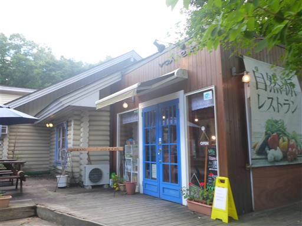
本日どこも観光しないのは寂しいので、西の郷遊歩道に行ってみる。
これまでの喧騒が嘘のようで、誰もいない。
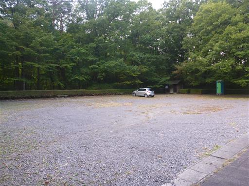
早速辺りを散策する。
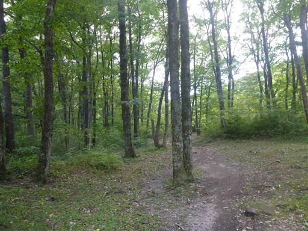
屏風岩。一際目立つ立派な岩だ。
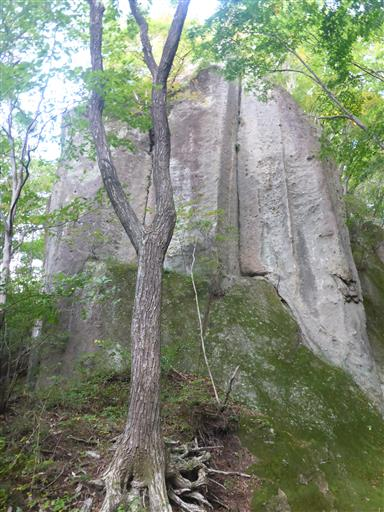
メガネ岩。大きな穴が開いた珍しい岩だ。
どうせなら中を潜るように道を付けてほしかった。
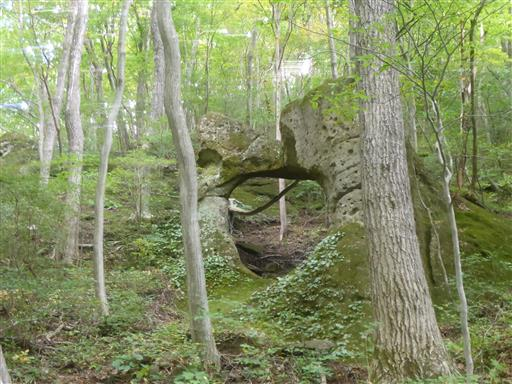
那須見の台。ここからは大展望が広がる。
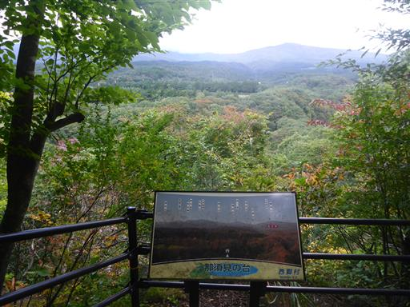
しかし残念ながら那須岳は雲の中。
思った以上に広大な敷地で、全て歩いていると時間が足りない。
ここで引き返して滝を見に行くことにする。
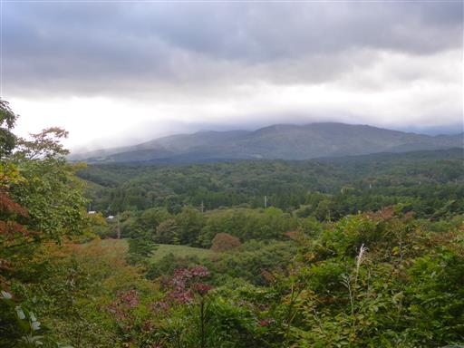
整備された急な斜面を下っていく。

眼下に阿武隈川が見えてくる。
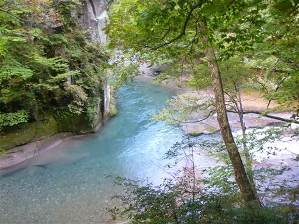
河原まで下りることができる。ここは2つの川の合流点。
崖に囲まれたこの場所は人の気配がなく、別世界のようだ。
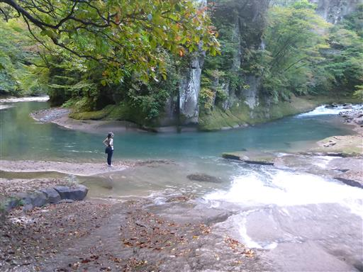
支流にかかるのが一休の滝。大きくはないが美しい滝だ。
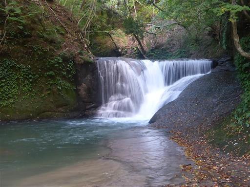
雪割橋。深い渓谷にかかる美しい橋だ。
かなり古そうな橋なので、すぐ側に新しい橋の工事が行われている。
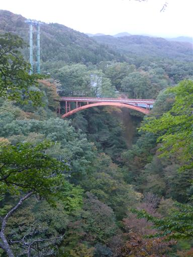
雪割橋から下を覗いてみる。かなりの高度感だ。
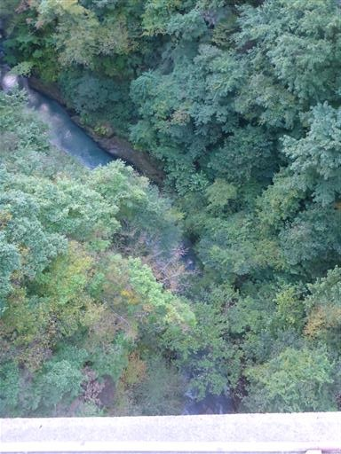
1時間ほど観光したら、本日のキャンプ地・キョロロン村に移動する。
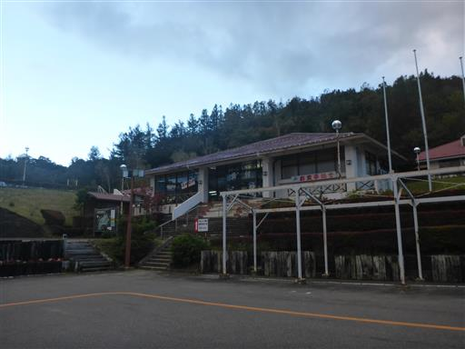
キャンプ場は寂しい限りで、今夜の宿泊は2家族のみ。
併設されている温泉は地元の人で賑わっていた。
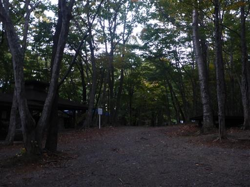
テントサイトはかつてたくさんあったようだが、今は中央の道の側以外は閉鎖されている。
様々なアトラクションがあって子連れには楽しそうな施設なので、
いつか再訪してみたいが、それまでにつぶれていなければ良いけれど…
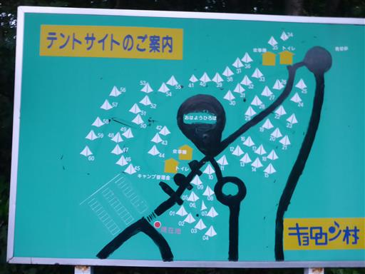